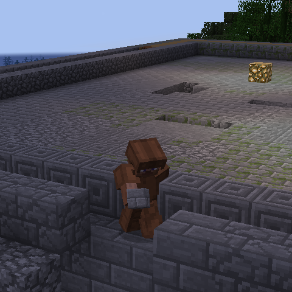

There are six types of dwarfs you can play as. All dwarf classes spawn with a book that is your main spell. Left clicking the book will give you items depending on what class you have.
Builder
Builders start with tools, food and have the ability to conjure every 30 seconds to gain some more stone. As a common dwarf, your general goal is to start building walls and aiding the craftsmen so they can gear you up.
It is always a good idea as a common dwarf to chop down as many trees as you can for the blacksmiths in particular, and also give the craftsmen some cobblestone for tools and building.
Show detailed instructions
The book spell can be used every 30 seconds to summon stone blocks, these are used for building walls and other protection against monsters. Sometimes you will get a lot of stone blocks and sometimes you may be unlucky and get nothing. There is a chance to get glowstone dust which is used to craft glowstone blocks to be used as a light source.
The tools you spawn with are unbreakable and the food is there to satisfy your hunger until you can get food from the bakers.
Alchemist

Alchemists transmute potions. If you brew 3 mundane potions, you can use your transmute spell to gain a bunch of potion supplies.
It is generally recommended to not upgrade potions since dwarfs can left click potions to apply the upgraded version for 30 seconds. Upgrading potions removes this ability.
Blacksmiths supply you with the redstone you need and you supply Tailors with bones.
Show detailed instructions
Find a spot and start building your alchemy shop with the lapis lazuli blocks.
The blue lapis blocks makes it easy for dwarfs to know where to get potions.
Place your brewing stands and start brewing mundane potions with your redstone dust.
When you have three mundane potions in your inventory, left click the book and you will transmute the mundane potions into health, swiftness, strength and fire resistant potions.
Place these in a chest for other dwarfs to get.
If you do not have water nearby, ask a tailor who has a bucket for water. When you run out of redstone dust, ask a blacksmith if they have some you can borrow. If you run out of glass, you need to smelt the sand that you get when you use your book spell for more glass. A blacksmith can help you with coal and furnaces for smelting, or a builder can give you some cobblestone for furnaces.
You will notice that you are getting a lot of bones when transmuting. Give those to tailors, they need bones to keep growing wheat.
Tailor
Tailors transmute armour. If you craft 3 bread, you can use your transmute spell to gain a bunch of armour.
Alchemists supply you with more bones to keep farming and you supply Blacksmiths with gold to smelt.
Show detailed instructions
Find a spot that has soil, or collect some and place it where you want your tailoring shop to be.
You can use your iron bars to build some walls around your wheat field.
Get some water and till farmland with your hoe, and start growing your seeds.
A 3×3 area is enough, you do not need that much space.
Turn your bones into bone meal and fertilise the wheat, do not wait for it to grow.
Harvest nine wheat to craft three bread, then use your book spell to transmute armour.
Place the armour in a chest for other dwarfs to get.
The saplings you spawn with can be used to plant some trees in the base.
Jungle saplings can be placed in a 2×2 formation to grow a large tree.
Since you will run out of bone meal at some point, find an alchemist and ask them for more bones. You can also compost your excess seeds, but this is not sustainable.
Give the raw gold you get from transmuting to a blacksmith so they can keep crafting golden clocks.
Blacksmith

Blacksmiths transmute weapons. If you craft 3 golden clocks, you can use your transmute spell to gain a bunch of weapons.
Tailors supply you with gold and you supply Alchemists with redstone. Bakers may also need to borrow some of your coal.
Show detailed instructions
Find a spot and build a smithery, dwarfs will recognise your smithery because it is built out of nether bricks.
You need to mine the redstone and smelt the raw gold so you can craft three golden clocks.
When you have three clocks, you can use your book spell to transmute weapons.
Place the weapons in a chest for other dwarfs to get.
Additionally, blacksmiths get string, feathers and flint. The string is used to craft bows, and the feathers and flint are for arrows.
To craft bows and arrows you need sticks, which you can get by asking a builder to cut down some trees for you.
You will run out of gold eventually, which you need to get more from tailors. You will also get a lot more redstone and coal than you need. Share some of your redstone to alchemists and some of your coal to bakers.
Baker
Bakers transmute food. If you smelt 15 brick, you can use your transmute spell to gain a bunch of food.
Blacksmiths supply you with coal and you supply all the other dwarfs with food and milk.
Show detailed instructions
Build a bakery out of your bricks, other dwarfs will recognise your bakery from the blocks it is built out of. Break your clay blocks to get clay balls, and smelt them into brick. When you get fifteen brick, you can use your book spell to transmute cake, pie, cookies and milk. You will also get more clay blocks that you need to break and keep smelting. Place food and milk in a chest, and place cake on the ground all over the base for dwarfs to eat.
You will run out of coal eventually, but blacksmiths get ton of that stuff and will share it with you.
Inventor
Inventors transmutes special gear. If you craft 3 fletching tables, you can transmute enchanted books and some other special gear.
Show detailed instructions
Build a shop out of your prismarine blocks, other dwarfs will recognise your shop using these blocks. Use your shovel to break gravel into flint, and craft fletching tables out of the flint and planks. When you have 3 fletching tables, you can transmute them. While transmuting, you will also get more gravel and planks so you can keep crafting fletching tables.
You can either place the enchanted books in a chest and let other dwarfs use or combine them to more powerful books, or you can use your anvil to combine the books for the dwarfs.